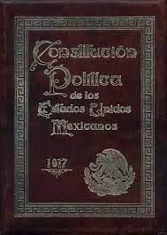
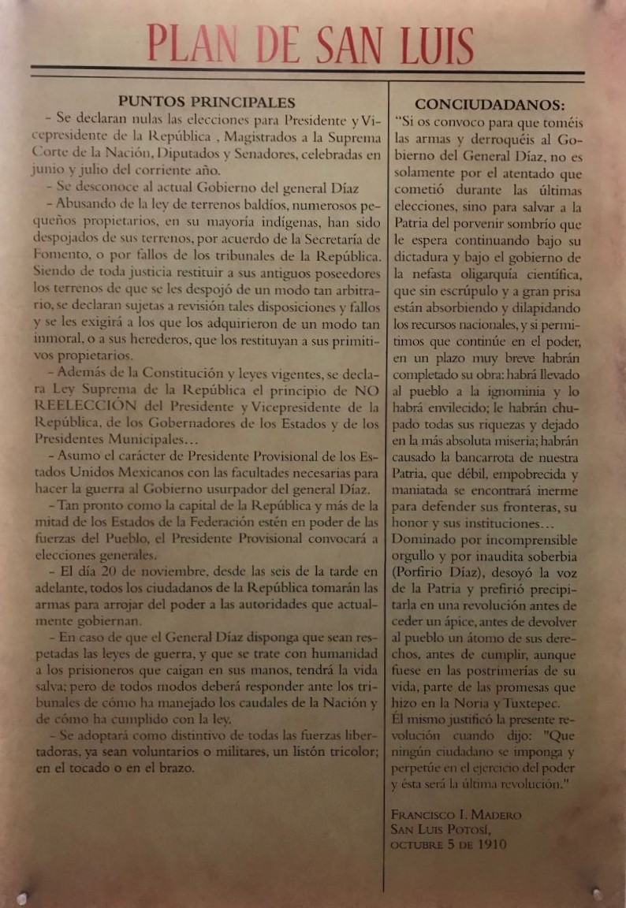
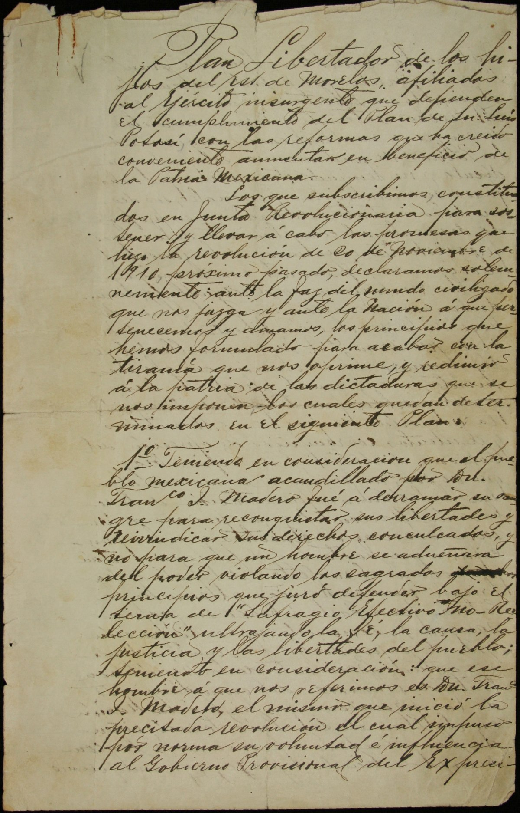
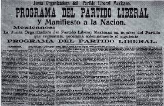
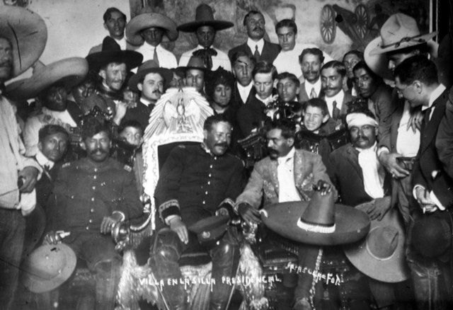
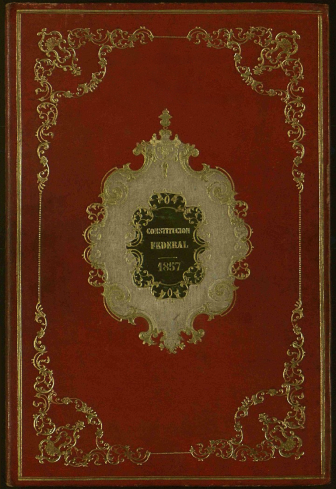
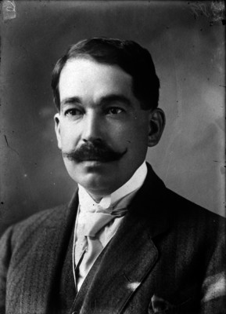
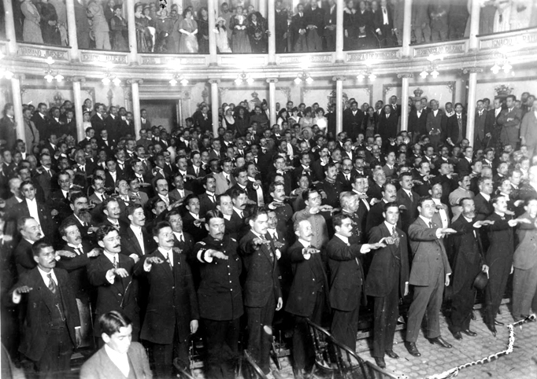
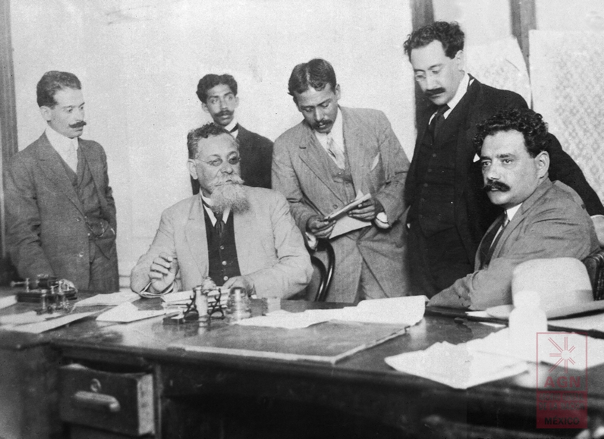
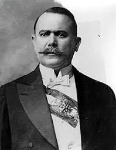

HISTORIA DE LA PROMULGACIÓN DE LA CONSTITUCIÓN POLÍTICA DE LOS ESTADOS UNIDOS MEXICANOS
¿Qué es La Constitución Política de los Estados Unidos Mexicanos?
La Constitución Política de los Estados Unidos Mexicanos de 1917 es la carta magna y norma fundamental,
establecida para regir jurídicamente al país, la cual fija los límites y define las relaciones entre
los poderes de la federación (poder legislativo, ejecutivo y judicial), entre los tres órdenes
diferenciados del gobierno (federal, estatal y municipal) y entre todos aquellos y los ciudadanos.
Así mismo, fija las bases para el gobierno y para la organización de las instituciones en que el se
asienta y establece, en tanto que pacto social supremo de la sociedad mexicana, los derechos y los
deberes del pueblo mexicano.

Constitución Política de los Estados Mexicanos.
La Promulgación de la Constitución Política de los Estados Unidos Mexicanos por Venustiano
Carranza
La Revolución Mexicana desencadenó una serie de planes y programas significativos. Entre ellos se
destacan el Plan de San Luis Potosí
y el de Guadalupe, ambos dirigidos a
derrocar gobiernos percibidos como dictatoriales. Otros, como el Plan de Ayala, se enfocaron en
abordar problemas específicos de grupos sociales, mientras que algunos adoptaron un enfoque
regionalista.


Plan de San luis y Plan de Ayala.
Además, surgieron programas más amplios, como el del Partido Liberal en 1906 y el de la
Convención Revolucionaria en 1916. Sinembargo, es importante señalar que la aplicabilidad de estos
programas se
vio limitada, ya sea debido a su origen en el exilio o a la derrotade la facción que los
respaldaba.

Partido Liberal 1906 y la Convención Revolucionaria en 1916.
La complejidad política posterior a la Revolución Mexicana, que inició el 20 de noviembre de 1910, se
evidenció con la emergencia de la facción constitucionalista como la vencedora. A pesar de los
desafíos, la nueva Constitución se presenta como un programa de gobierno más que un simple plan. La
situación incluyó problemas diplomáticos, militares, sociales y económicos, como la invasión
estadounidense y la presencia de diversos grupos rebeldes.
Finalmente, se enfrentó el desafío político de la transición de una facción armada triunfante a un
gobiernolegal. Carranza, líder de la facción victoriosa, enfrentó obstáculos al asumir la
presidencia, ya que serequería un proceso democrático y legal. Reconociendo la obsolescencia de
la Constitución de 1857, considerónecesario modificarla, al tiempo que debía abordar la
legislación creada
durante la lucha revolucionaria.

Constitución de 1857
Fechas:
Carranza y su círculo cercano percibieron tempranamente la necesidad de elevar a rango constitucional
laspropuestas normativas de la facción constitucionalista mediante una nueva constitución. Aunque
la decisión era delicada políticamente, dada la lucha armada en defensa de
la Constitución de 1857, se anunció paulatinamente la conveniencia de una nueva cartamagna en
diversos momentos y lugares.
El cambio ideológico de Carranza entre su rebelión en Coahuila y su tiempo en Sonora fue
significativo.Inicialmente renuente a promesas de reforma social, en Sonora, a finales de 1913,
anunció claramente que se realizarían reformas sociales al triunfo del movimiento, adoptando el
lema
"Constitución y Reformas".
Durante la guerra de facciones en 1915, Carranza adoptó estrategias sociopolíticas, promulgando
adiciones al Plan de Guadalupe y lanzando propuestas de reforma agraria. Estableció una sólida
alianza con el movimiento obrero. Estas acciones le aseguraron el respaldo popular, consolidando al
constitucionalismo como la facción victoriosa, pero con compromisos significativos.
Plan de Guadalupe
Tras la victoria, el gobierno constitucionalista se enfrentó al desafío de emprender cambios
políticos, y la simple restauración de la
Constitución de 1857 no era suficiente. A principios de 1916, se
difundió la idea de elaborar una nueva constitución que incorporara compromisos sociales adquiridos
y cambios políticos necesarios para el Estado posrevolucionario.
Carranza, consciente de la necesidad de obtener reconocimiento diplomático de Estados Unidos, inició
los preparativos para una nueva constitución tras superar la Expedición Punitiva. Encargó la
redacción del anteproyecto a José Natividad Macías y Luis Manuel Rojas, quienes ya habían liderado
la elaboración de normativas preconstitucionales. La nueva Constitución de 1917 reflejó una
continuidad
clara con la legislación preconstitucional elaborada por los constitucionalistas entre 1914 y 1916.

José Natividad Macías y Luis Manuel Rojas
Contexto y desarrollo del Congreso Constituyente de 1916-1917 en México, características,
participantes
y la influencia de Carranza en la preparación y dirección del proceso constitucional:
En los antecedentes legislativos, la facción constitucionalista liderada por Venustiano Carranza
emprendió la elaboración de leyes y reformas desde su establecimiento en Veracruz. Un logro notable
fue Ley 6 de enero de
1915, que sirvió como precursora del artículo 27 de la Constitución
de 1917.
Ley Agraria
Posteriormente, Carranza encargó a colaboradores realizar un estudio comparativo entre las
normativas de 1914 y 1915 y
Constitución la Constitución de 1857. Dos grupos se destacaron en este proceso: Macías y
Rojas, y en equipo de la Secretaría de Justicia dirigido por Roque Estrada.
Roque Estrada
En la preparación del Congreso Constituyente, Carranza buscó legitimar la idea de una nueva
constitución mediante la difusión en medios como la Revista de Revistas y los periódicos de
Félix
Palavicini. Anunció la convocatoria a elecciones para este Congreso.
Felix Palavacini
Las elecciones para diputados constituyentes se llevaron a cabo el 22 de octubre de 1916. Querétaro
fue elegido como sede de la asamblea constituyente debido a su relevancia histórica y a la
seguridad
militar que ofrecía.
Elecciones para diputados constituyentes se llevaron a cabo el 22 de octubre de 1916
Se estableció que la asamblea constituyente en Querétaro no debía durar más de dos meses, con el
objetivo de evitar la prolongación de debates y limitar la discusión a las propuestas del
anteproyecto de reformas a la
Constitución de 1857
En cuanto a la composición del Congreso Constituyente, se destaca la representación de distintos
estados y profesiones. La predominancia de abogados y profesionales urbanos se subraya, mientras
que la participación del sector militar fue limitada.
La representatividad social en el Congreso Constituyente se caracterizó por la predominancia de
representantes de clases medias urbanas, con una escasa presencia de líderes campesinos genuinos
y una proporción significativa de líderes obreros.
Se establece una comparación con la Convención, destacando diferencias como la reducida
participación militar en el Congreso Constituyente y la representación mayoritaria de civiles,
especialmente de la clase media urbana, en este último.

Congreso Constituyente
¿Quienes participaron?
El Congreso Constituyente de 1916 en Querétaro, México, bajo el liderazgo de Venustiano Carranza.
Carranza buscó asegurar la mayoría de sus seguidores en la asamblea, anticipando la autonomía del
congreso. Se esforzó por incluir constitucionalistas con experiencia legislativa y colaboradores
cercanos, destacando la importancia de personajes como Luis Manuel Rojas, a quien Carranza designó
como presidente de la asamblea. A lo largo de la formación del congreso, Carranza maniobró
hábilmente para garantizar la presencia de personas afines a su causa.
Entre las personas mencionadas se encuentran:
1.-Venustiano Carranza: Líder principal y estratega detrás del Congreso Constituyente.
2.-Luis Manuel Rojas: Designado por Carranza como presidente de la asamblea.
3.-Algunos constitucionalistas con experiencia legislativa.
4.-Colaboradores cercanos a Carranza, cuyas identidades políticas fueron cuidadosamente
consideradas.
5.-Miembros de la comisión redactora, cuyas identidades y lealtades políticas fueron seleccionadas
por
Carranza.

Caranza y sus colaboradores cercanos
A pesar de las tensiones entre las facciones constitucionalistas, Carranza logró mantener el control
durante la asamblea. A lo largo de todo el proceso, se destacan las tensiones y maniobras en la
selección de miembros para garantizar la influencia de Carranza, lo que demuestra su habilidad
política y estratégica. Aunque surgieron desafíos, Carranza prevaleció y logró sus objetivos en el
desarrollo del Congreso Constituyente.
Disminución de Divisiones y Revelando Consensos de la Constitución de 1917
El análisis del Congreso Constituyente de México a 100 años de su realización revela una perspectiva
distorsionada. Contrario a la creencia común de una división clara entre facciones liberales y
radicales vinculadas a Carranza y Obregón, respectivamente, se presentan cinco elementos que
desmienten esta interpretación. Estos elementos incluyen la composición geográfica y sectorial de la
asamblea, la configuración de sus órganos directivos y comisiones redactoras, las intervenciones en
la tribuna, el sentido de las votaciones y la ausencia de bloques partidistas.

Alvaro Obregon
Se destaca que la intensidad de los debates se concentró en temas específicos, especialmente en asuntos
educativos y religiosos, mientras que en Querétaro se evidenciaron similitudes y consensos. Se
argumenta que los diputados compartían principios ideológicos fundamentales, desafiando la noción de
divisiones partidistas.
La presencia militar de Obregón, hasta entonces centrada en asuntos militares, se aborda considerando la
baja densidad demográfica de los estados potencialmente afines a Obregón. Se señala además que la
mayoría de los diputados tenían vínculos con la administración carrancista.
Las votaciones, mayoritarias e incluso unánimes para la mayoría de los artículos, resaltan que los
artículos 27 y 123 fueron redactados
por carrancistas y votados de manera unánime. Se argumenta que la nueva Constitución reflejó la
continuidad ideológica, normativa y política del movimiento constitucionalista liderado por
Carranza.
Se aborda la estrategia de Carranza para evitar el desconocimiento de la nueva constitución por parte de
grupos locales o potencias internacionales. A pesar de las presiones, la Constitución de 1917 se
consolidó y se considera la más longeva en la historia de México.
Constitución de los Estados Unidos Mexicanos:
DAR CLICK EN LA IMAGEN PARA ABRIR EL PDF DE LA CONSTITUCIÓN